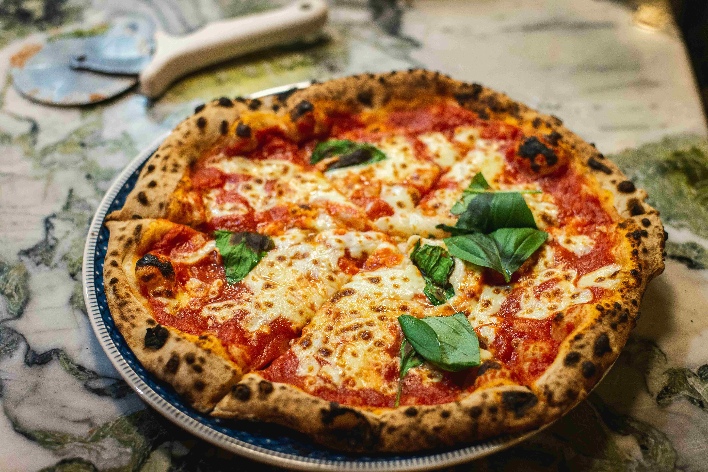

La pizza margherita, insieme alla pizza marinara, è una delle versioni più semplici e amate della pizza!
I protagonisti del condimento sono pomodoro, mozzarella e basilico, un trio indissolubile che richiama i colori della bandiera italiana e i sapori della cucina mediterranea.